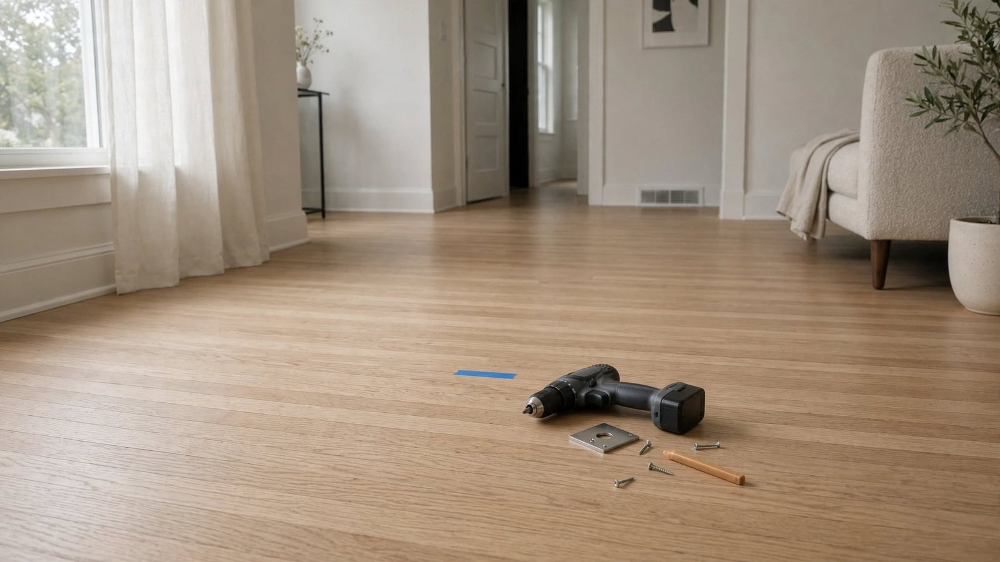
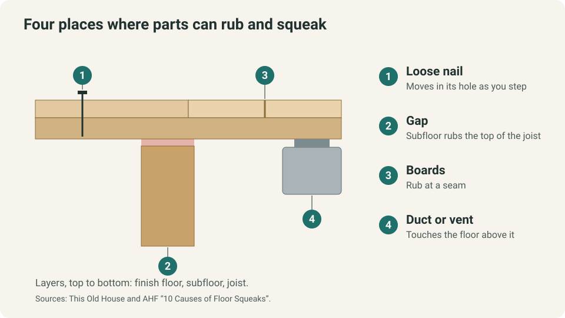
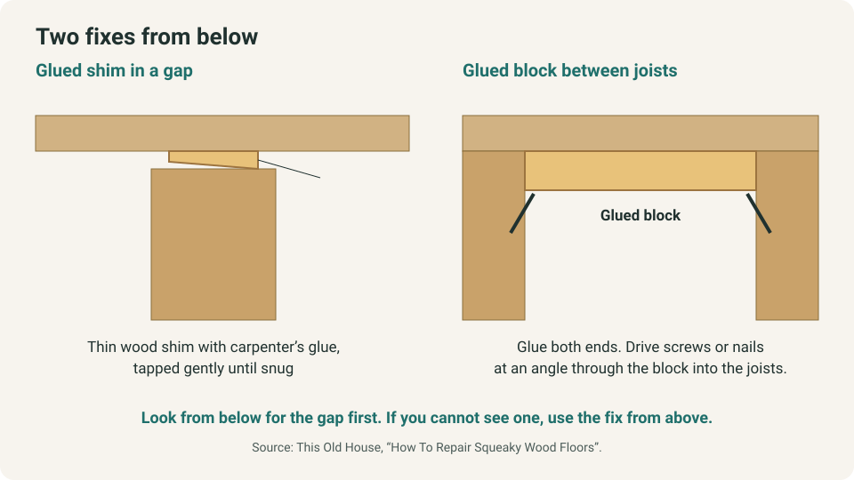
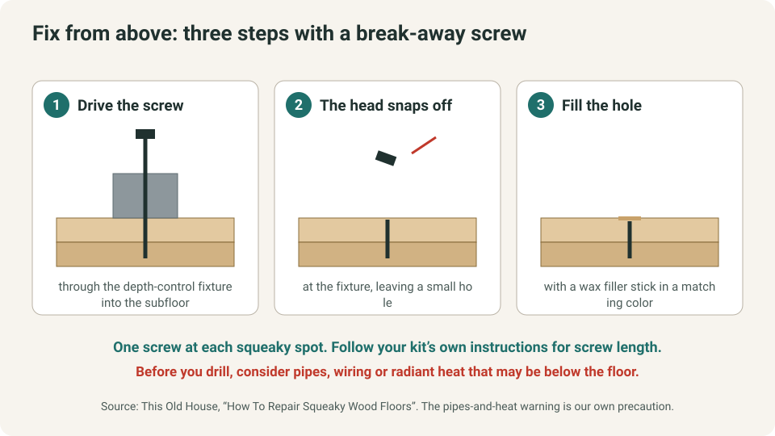

WEEKEND PROJECTS · FLOORING
How to Fix a Squeaky Wood Floor (Find the Cause First)

A squeak means two parts of the floor are rubbing. Before you add a single screw, find the spot, work out which parts move, and choose a fix that matches the cause and the access you have. This guide uses a general contractor’s demonstration from This Old House and a hardwood maker’s list of causes, and it says plainly where the sources stop.
The quick answer
- Find the spot first. Mark it with tape while someone walks the floor. If you can reach the underside, watch it from below.
- From below: shim a gap between the subfloor and a joist, or glue and screw a block between joists.
- From above: a break-away screw driven through a depth-control fixture into the subfloor, one at each squeaky spot, then fill the small hole.
- Stop if the floor is soft, sagging or wet. That is no longer a squeak repair.
Quick plan
| Item | Detail |
|---|---|
| Time | This Old House puts the screw method at about 30 minutes |
| Best for | Nailed wood floors over a subfloor, from above or from a basement or crawl space |
| Not for | Soft, sagging or wet floors, or floating floors |
| Goal | Silence the spot by holding the parts together, not by hiding the sound |
Step 1: Find the squeak
- Walk slowly around the room and listen.
- Mark each squeaky spot with painter’s tape or chalk.
- If you can, have someone walk the floor while you listen from below.
- Check for visible gaps between boards or signs of movement under weight.
This Old House also suggests working out how the floor is built. Its contractor drills a small hole and feels with a nail for space under the floorboards, to tell a floor laid over a subfloor from a sleeper system.
Step 2: Work out what is rubbing
Squeaks come from different contacts. This Old House describes loose nails that squeak going in and out of the hole, gaps between boards and subfloor, and boards rubbing each other. AHF, a hardwood maker, lists ten causes that mostly start when the building was made.

| What you notice | Likely cause and source | Next check |
|---|---|---|
| One spot, nail seems to move | Wood movement loosened the nail (This Old House) | Look for a gap from below, or use a screw from above |
| A line of squeaks along a joist | Joists not set “crowned” upward, so the subfloor bridges high and low joists (AHF) | Check from below for gaps along that joist |
| Near a floor vent | Vent cut too tight to the duct, so the floor rubs the metal (AHF) | Check around the duct from below |
| Near an interior wall | Wall plate anchored to the subfloor instead of the joist (AHF) | Needs a closer look; consider a pro |
| Seasonal or in damp areas | Wood expands and contracts with humidity (This Old House) | Keep humidity steady; see the links below |
APA, the engineered wood association, lists 12 typical causes in its technical note C468, including wet lumber, improper panel spacing, improperly driven nails, blocking, joist hangers and a noisy tongue-and-groove joint. We read its listing page, not the six-page PDF, so we cite it only for that list. AHF adds that every squeak can be eliminated once the source is found, though fixing some of them can be a major undertaking.
Step 3: Check for warning signs first
The sources we opened treat squeaks as movement. We add our own precaution: stop and get a pro if the floor is spongy, sags, or shows water stains, mold or rot, or if the squeak covers a large area. A repair that fastens wet or damaged material hides the problem.
Step 4: Fix it from below
If you can reach the underside from a basement or crawl space, This Old House describes these options.

- Shim a gap. Find a gap between the subfloor and a joist. Coat a thin wood shim with carpenter’s glue, insert it and tap it gently until it is snug. Let the glue dry before trimming the excess.
- Add a block. Cut a block to fit between the joists, glue both ends, press it against the underside of the subfloor and secure it with screws or nails driven at an angle into the joists.
- Other options it lists. Brackets that hold the subfloor to the joists, construction adhesive along the seams where subfloor meets joist, and longer screws that pull a loose subfloor down against the joists in older homes.
Work only where you can see what is around you. Do not drive anything into places that may hold pipes or wiring.
Step 5: Fix it from above
If you cannot reach the underside, This Old House shows a break-away screw method, demonstrated with a kit that comes with a metal depth-control fixture.

- Insert a break-away screw through the depth-control fixture.
- Hold the fixture tight to the floor and drive the screw through the floorboard into the subfloor, with the drill at its highest speed. Pilot holes are not typically required.
- The screw head snaps off at the fixture, leaving a small hole. Drive one screw at each squeaky spot.
- Fill each hole with a wax or wood filler stick in a matching color, slightly overfilling, wipe off the excess and let it dry before you walk on it.
The kit’s “standard length” is for floors laid over a subfloor, and This Old House uses long decking screws for sleeper systems. Neither source gives a universal screw length, so use your kit’s own instructions and do not guess. Our precaution: before you drill, consider whether pipes, wiring or radiant heat may be below, and stop if you cannot rule it out.
Step 6: Retest and prevent
- Walk the same spot again after glue and filler have dried.
- Keep indoor humidity steady. This Old House says wood movement is part of the cause.
- In a damp basement or crawl space, This Old House suggests a dehumidifier to protect the subfloor. Our guides on fixing damp crawl space humidity and sizing a crawl space dehumidifier cover that.
- Laying new flooring? Fix squeaks first, and see our guide to preparing a subfloor for LVP.
Quick win (10 minutes)
Walk the room with painter’s tape and mark every squeak before you buy anything. A count of spots, and whether they sit along a line or near a vent or wall, tells you which cause to look for first.
Common mistakes
- Adding screws before finding where the movement is.
- Treating a wet or sagging floor as a squeak.
- Guessing the screw length for the floor construction.
- Forcing a shim so hard it lifts the subfloor.
- Skipping the filler, which leaves visible holes.
- Ignoring a vent or interior wall that the squeak follows.
When to call a professional
- The floor is soft, sagging or wet, or you find rot, mold or deteriorated framing.
- The squeak is over a large area or follows a wall plate or duct you cannot reach.
- The floor is under warranty and a repair could affect it.
- Radiant heat, pipes or wiring may be under the repair spot.
FAQ
Is a squeaky floor a sign of structural damage?
Not necessarily. The sources we opened describe squeaks as movement between parts, such as loose nails or gaps. A floor that is soft, sagging or wet is a different matter and needs an assessment.
Can I fix a squeak without getting under the floor?
Often yes. This Old House shows driving a break-away screw through a depth-control fixture into the subfloor, one at each squeaky spot, then filling the hole.
Can I use ordinary screws?
The method we found uses break-away screws with a depth-control fixture, and says pilot holes are not typically required. Neither source says an ordinary screw is a safe substitute, so use the kit’s instructions.
Should I use powder on the boards?
Neither source we opened recommends powder, so this guide does not cover it.
Why does my floor squeak more in some seasons?
Wood expands and contracts with humidity and temperature, and AHF notes lumber dries after a building is finished. This Old House advises keeping humidity steady.
Is this guide for floating floors?
No. It covers nailed wood floors over a subfloor. For a floating floor, follow your plank maker’s instructions, because fastening through floating planks can restrict their movement.
What this guide assumes
It covers nailed solid or engineered wood floors over a subfloor in a typical U.S. home. It does not replace a structural assessment, and the hidden-utility and warning-sign advice is our own precaution, not a quote from the sources. HomeProjectWise has not performed this repair, and we do not endorse a brand or product.
Keep going
- How to prepare a subfloor for LVP before laying new planks.
- How to fix damp crawl space humidity if the floor sits over a crawl space.
- What size dehumidifier for a crawl space to size the equipment.
Sources and last checked
The first two pages were opened and read in full on 15 November 2026. For the APA note we read only the listing page, which gives the topics, not the six-page PDF. The sources are a contractor’s demonstration and a hardwood maker’s list rather than an engineering standard, and none gives a universal fastener size.
- This Old House, “How To Repair Squeaky Wood Floors” (updated 29 May 2026): https://www.thisoldhouse.com/flooring/how-to-repair-squeaky-wood-floors
- AHF Floor Expert, “10 Causes of Floor Squeaks” (updated 26 Oct 2022): https://hardwoodexpert.ahfproducts.com/knowledge-base/10-causes-of-floor-squeaks/
- APA, Technical Note C468 “Floor Squeaks: Causes, Solutions and Prevention” (revised April 2002; listing page only): https://www.apawood.org/guides-tools-training/technical-document-library/technical-notes/floor-squeaks-causes-solutions-and-prevention/